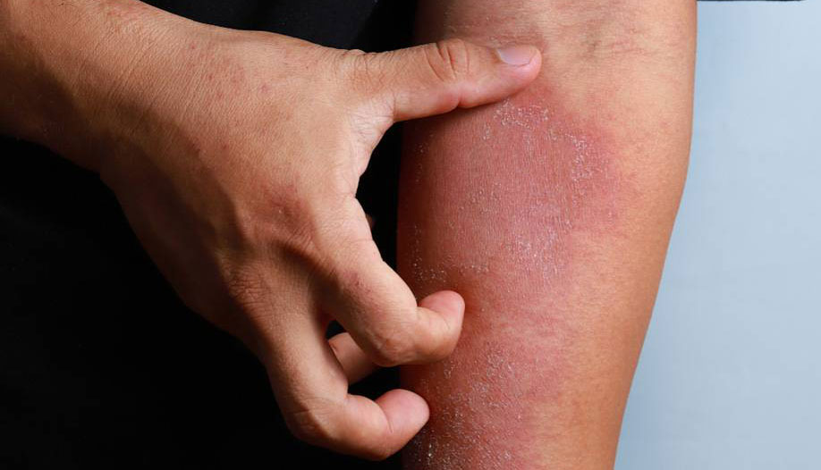
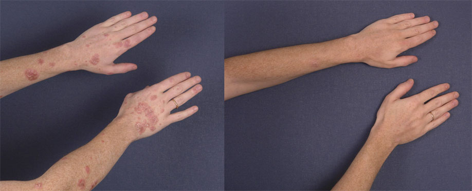

Στα συντακτικά γραφεία μας έφτασε επιστολή από έναν αναγνώστη. Το περιεχόμενό του μας φάνηκε πολύ ενδιαφέρον και χρήσιμο για πολλούς. Δημοσιεύουμε αυτούσιο το κείμενο:

Γεια! Το όνομά με λένε Παναγιώτη είμαι 46 ετών και έχω ψωρίαση. Πιο συγκεκριμένα, είχα ψωρίαση, όμως από πέρσι έχω ξεχάσει τελείως για αυτό το πρόβλημα. Δεν με ενοχλεί πια.
Η σημερινή μου επιστολή μπορεί να χαρακτηριστεί και ως κραυγή απόγνωσης.
Είχα για πολύ καιρό ενδοιασμούς αν πρέπει να δημοσιευτεί ή όχι, γιατί γνωρίζω από προσωπική εμπειρία ότι ακόμη και μια απλή αναφορά σε αυτό το θέμα για πολλούς πάσχοντες από ψωρίαση είναι σαν ένα κόκκινο πανί για έναν ταύρο. Έχουν συνηθίσει να εμπιστεύονται μόνο γιατρούς και δεν θέλουν να ακούσουν συμβουλές. Αλλά σχεδόν καθημερινά στα μέσα μαζικής μεταφοράς ή στα καταστήματα συναντώ ομοιοπαθείς. Και με πονάει πολύ αυτό, γιατί βίωσα στο πετσί μου το πόσο άσχημη ασθένεια είναι. Θέλω να τους πλησιάσω όλους και να τους μιλήσω για το ιστορικό της θεραπείας μου, αλλά καταλαβαίνω ότι πολλοί δεν θα θέλουν καν να με ακούσουν.
Πριν από μερικά χρόνια, και εγώ ο ίδιος θα έστελνα στον αγύριστο έναν τέτοιον παντογνώστη, αλλά αν διαβάζετε αυτήν την ανάρτηση, μην βιαστείτε να κλείσετε την σελίδα. Είμαι βέβαιος ότι η εμπειρία μου θα είναι χρήσιμη για πολλούς.
Η ψωρίαση σε μένα εμφανίστηκε σε ηλικία 14 ετών, όταν το αίμα μου άρχισε να βράζει από υπερβολική ποσότητα ορμονών.
Όλα ξεκίνησαν από το πρόσωπο, και συγκεκριμένα από τα φρύδια. Αργά αλλά σταθερά η ψωρίαση καταλάμβανε μια ολοένα και μεγαλύτερη επιφάνεια του δέρματος, που εξαπλωνόταν στο στήθος και τα χέρια. Το δέρμα είχε φλεγμονή και κοκκινίλες, και ως αποτέλεσμα όλα μετατράπηκαν σε μια συνεχή φολιδωτή πληγή, η οποία άρχιζε αργά να επουλώνεται, αλλά μετά από μια εβδομάδα τα ίδια και τα ίδια.
Φυσικά, οι γονείς μου με πήγαν στους γιατρούς, οι οποίοι μου συνταγογραφούσαν συνεχώς όλο και πιο ισχυρές ορμονικές αλοιφές, που όμως δεν έφερναν αποτελέσματα.
Εκτός από τη σωματική δυσφορία, η ψωρίαση έγινε αιτία πολλών ψυχολογικών προβλημάτων
Τα περισσότερα παιδιά, ως επί το πλείστον, δεν χάνουν την ευκαιρία να κοροϊδέψουν και δεν χαρίζονται σε κανέναν. Επομένως, το άθλιος, λεπρός, ψωριάρης- ήταν από τα πιο ήπια κοσμητικά που άκουγα κατά καιρούς. Σε όλη μου την νεανική ηλικιακή ονειρευόμουν να τελειώσει η ψωρίαση και να αρχίσει η ακμή μου, όπως σε όλους.
Είχα τελειώσει το γυμνάσιο και αποφοιτήσει από το πανεπιστήμιο πια, βρήκα δουλειά και είχα συνηθίσει να ζω με την ψωρίαση. Είχα αλλάξει ένα σωρό γιατρούς και κάθε επίσκεψη στον γιατρό τελείωνε με μια συνταγή για αλοιφές που ήξερα ήδη.
Έτσι ήρθαν τα πράγματα στη ζωή μου που σε ηλικία 25 ετών παντρεύτηκα και η σύζυγός μου κι εγώ μετακόμισα με στην πατρίδα της στις ακτές της Ιταλίας. Εκεί, χάρη στο υγρό κλίμα της θάλασσας, η ψωρίαση μου πέρασε σε μόνιμη ύφεση για 20 χρόνια. Αλλά πριν από τρία χρόνια έπρεπε να επιστρέψω - οι γονείς μου αρρώστησαν και χρειαζόντουσαν φροντίδα.
Η ψωρίαση επέστρεψε, πιθανώς λόγω αλλαγής του κλίματος και άγχους.
Ο εφιάλτης των νεανικών μου χρόνων επέστρεψε ξανά. Και πάλι υπέφεραν περισσότερο εκείνα τα μέρη του σώματος που είναι πάντα ορατά, δηλαδή τα χέρια και το πρόσωπο . Αυτή την φορά, εκτός από στεροειδή φάρμακα, από απελπισία, ξόδεψα πολλά χρήματα σε διάφορες ομοιοπαθητικές αλοιφές. Φυσικά, χωρίς αποτέλεσμα.
Και τότε μια μέρα, όταν το πρόσωπό μου παρουσίασε ξανά φλεγμονή, καλύφθηκε με δερματώσεις, και κάλυψα τα πάντα με ροκανίδια από το πρόσωπο μου, όπως ο Πινόκιο, κάτι με ώθησε να διαβάσω τι γράφουν για την ασθένειά μου στο Διαδίκτυο. Και στο πρώτο νήμα κάποιου φόρουμ συνάντησα το όνομα ενός καθηγητή που αντιμετωπίζει με επιτυχία την ψωρίαση. Χωρίς να πολυσκεφτώ, τηλεφώνησα στον αριθμό τηλεφώνου που αναφέρεται στο φόρουμ και περίμενα την ημέρα του ραντεβού μου.
Όταν επιτέλους επισκέφθηκα τον καθηγητή, με εξέτασε, άκουσε όλα τα παράπονά μου και συνταγογράφησε ένα φάρμακο που ονομάζεται , προειδοποιώντας με αμέσως ότι δεν πρόκειται για μια μαγική θαυματουργή θεραπεία, αλλά εξαιρετικά αποτελεσματική. μια άλλη αλοιφή. Πόσες φορές το είχα ξανακούσει αυτό; σκέφτηκα από μέσα μου πηγαίνοντας στη ρεσεψιόν για να πληρώσω για το ραντεβού. Το το αγόρασε εκεί, μια συσκευασία, έτσι για μια δοκιμή.
Όταν επέστρεψα στο σπίτι, άλειψα τον εαυτό μου καλά καλά με αυτό το προϊόν και περίμενα. Δεν ένιωσα κάτι το διαφορετικό. Έτσουζε ελαφρώς, ένιωθα επίσης μια ευχάριστη φρεσκάδα σ το δέρμα ... Αλλά κυριολεκτικά πέρασε μισή ώρα και ξεκίνησε κάτι περίεργο. Οι φλεγμονώδεις, αιμορραγικές και κνηστικές πληγές μου άρχισαν να ξεθωριάζουν μπροστά στα μάτια μου. Έμεινα κυριολεκτικά άφωνος! Ακόμα και οι ισχυρότερες ορμονικές αλοιφές δεν έδιναν τέτοιο αποτέλεσμα.
Το επόμενο πρωί, για πρώτη φορά μετά 10 χρόνια, το πρόσωπό μου δεν φαινόταν πρησμένο.
Δεν υπήρχε φαγούρα ή ξεφλούδισμα. Επανέλαβα ξανά τη διαδικασία βάζοντας μπόλικη κρέμα. Αυτό συνεχίστηκε για περίπου δύο εβδομάδες. Η ψωρίαση προσπαθούσε συνεχώς να επιστρέψει, αλλά την σταματούσα με το .
Όταν τελείωσε η συσκευασία, μπήκα στο διαδίκτυο για να μάθω πού μπορώ να βρω και άλλο. Και συνάντησα τον ιστότοπο του κατασκευαστή, όπου το κόστιζε δύο (!! !) φορές φθηνότερα από ό, τι το αγόρασα στην κλινική. Από εκεί αγόρασα και άλλη μια συσκευασία και συνέχισα τη θεραπεία.
Και μετά από δύο εβδομάδες η ψωρίαση εξαφανίστηκε. Απλά εξαφανίστηκε και δεν επανεμφανίστηκε ποτέ. Παρ 'όλα αυτά, συνέχισα την θεραπεία που συνταγογράφησε ο γιατρός.

Έχει περάσει ένας χρόνος από τότε και δεν θυμάμαι καν την ψωρίαση.
Ελπίζω ότι κάποιος από τους αναγνώστες θα χρησιμοποιήσει την εμπειρία μου και θα μπορέσει να ξαναγυρίσει μια πλήρη ζωή. Παιδιά, πιστέψτε με, αξίζει τον κόπο!
Για ένα σχόλιο για το , απευθυνθήκαμε σε δερματολόγο, καθηγητή του Τμήματος Δερματολογίας στο Εθνικό Ινστιτούτο Υγείας Μαρίνα Παπαδημητρίου:
Το είναι ένα ιδιαίτερα αποτελεσματικό φάρμακο ενάντια στη ψωρίαση νέας γενιάς. Σε αντίθεση με ορμονικών στεροειδών αλοιφές, δεν προκαλεί παρενέργειες. καταπραΰνει γρήγορα και μόνιμα την φλεγμονή του δέρματος, μειώνει ερεθισμός και φαγούρα. Συνιστώ αυτό το φάρμακο σε όλους τους ασθενείς με ψωρίαση.